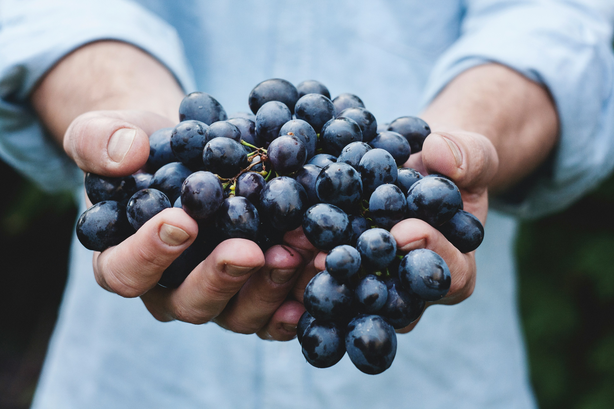

Qualidade e frescor

Produtos exclusivos


Bem-vindo a Villa Pomar Hortifruti, seu espaço de confiança para produtos frescos, saudáveis e de qualidade! Somos uma empresa dedicada a
trazer o melhor da natureza até você, oferecendo uma vasta seleção de frutas, verduras, legumes e produtos naturais, direto dos produtores
para a sua mesa.
Nosso compromisso é com a qualidade e a saúde. Trabalhamos com agricultores locais e parceiros que compartilham dos nossos valores,
garantindo alimentos livres de agrotóxicos e respeitando os ciclos naturais de cultivo. Além disso, priorizamos práticas sustentáveis,
contribuindo para um consumo consciente e responsável.
Aqui na Villa Pomar, acreditamos que a alimentação saudável é o primeiro passo para uma vida equilibrada e feliz. Nossa missão é tornar esse estilo de vida acessível, com produtos frescos e nutritivos que agradam a todos os gostos e necessidades.
Nossa visão é ser referência em qualidade e sustentabilidade no fornecimento de alimentos frescos, promovendo uma alimentação saudável e acessível, ao mesmo tempo em que contribuímos para a preservação ambiental e o desenvolvimento da agricultura local.
Nossos valores reforçam o compromisso com a qualidade, sustentabilidade, inovação, saúde e bem-estar, assim como a responsabilidade social e ambiental da empresa, alinhados com a visão de ser líder no setor. Nossos clientes e parceiros são o nosso maior motivador diário.
Somos a maior distribuidora de uvas de diversas variedades, com qualidade incomparável e frescor garantido! Somos apaixonados por trazer até você as melhores uvas, direto dos melhores produtores, sempre com o compromisso de oferecer produtos saudáveis e sustentáveis.
Na Villa Pomar, trabalhamos com uma ampla gama de variedades de uvas, desde as populares uvas verdes e rubis até as exóticas uvas sem sementes, moscatel, e as doces uvas crimson. Nosso catálogo atende a todos os gostos e necessidades, seja para consumo direto ou para o uso em receitas especiais, sempre priorizando o sabor e a qualidade.
Descubra nossa seleção exclusiva e experimente o que há de melhor no mercado. Villa Pomar Hortifruti, sua parceira em qualidade, sabor e diversidade!
Venha nos visitar e descubra como é fácil cuidar da sua saúde com sabor e qualidade!